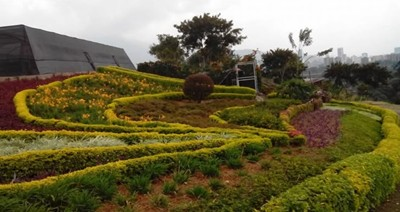

Cojardicom: fotografías que cuentan historias
Foto tomada por Audrey Rodriguez.

"Valla ubicada cerca de la Corporación Cojardicom, en el morro de Moravia. Muestra los primeros asentamientos y cómo empezó el trabajo de reciclaje en el basurero."
0:00 / 0:00

"Valla dentro del vivero de Cojardicom. Muestra los incendios que había en el morro, la montaña de basura y, a un lado, los asentamientos de las personas."
0:00 / 0:00

"Rosa Giraldo, Hortensia y Elsy Torreglosa, mujeres de la Corporación Cojardicom, junto a plantas del vivero."
0:00 / 0:00

"Valla cerca de la corporación, en el morro de Moravia. Explica qué hay debajo del morro: los residuos."
0:00 / 0:00

"Placa institucional de 2012, del año en que se entregó el vivero, junto a una imagen de las primeras plantas."
0:00 / 0:00

"Rosa Giraldo junto a una planta en mal estado. Representa los esfuerzos y procesos que ellas hicieron para que crecieran plantas y ayudar al morro, y que a veces eran arrancadas por la misma comunidad. Junto a ella, una foto de cómo están hoy esos jardines, lo único que queda es uno de los árboles sembrados por ellas de raíces profundas y asentamientos."
0:00 / 0:00

"Vista aérea, tomada con dron, del morro con los jardines del segundo proceso que se hizo en Moravia y otra fotografía de estos mismos jardines que se llamaban Jardines Arcoíris."
0:00 / 0:00

"El vivero hoy, junto a las plantas y las uvas que cultivan para el proyecto del viñedo."
0:00 / 0:00

Vista consolidada del territorio: jardines y procesos comunitarios que florecen en Moravia.
0:00 / 0:00